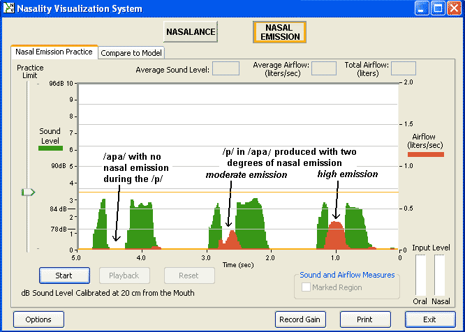
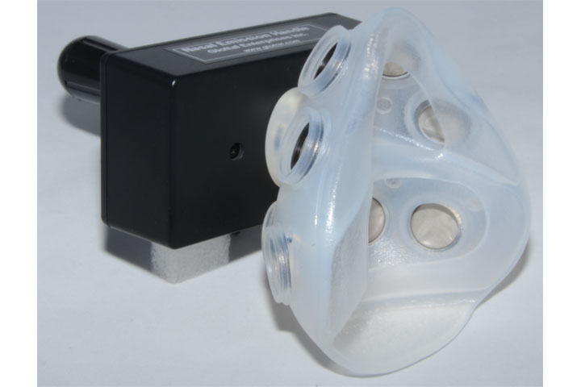
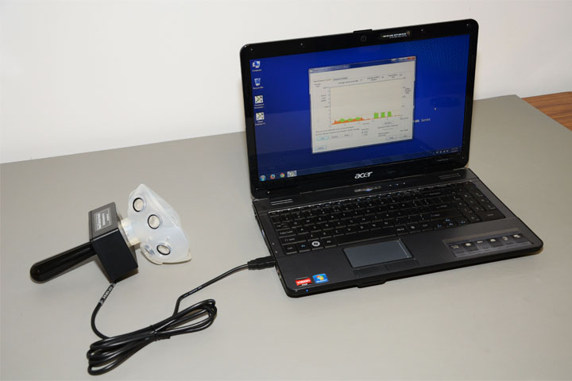
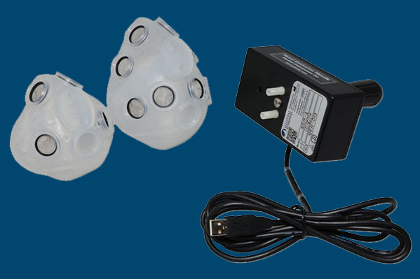
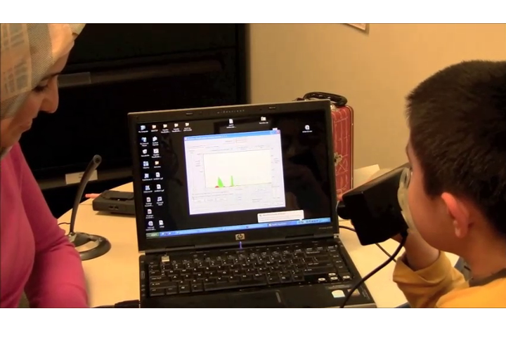
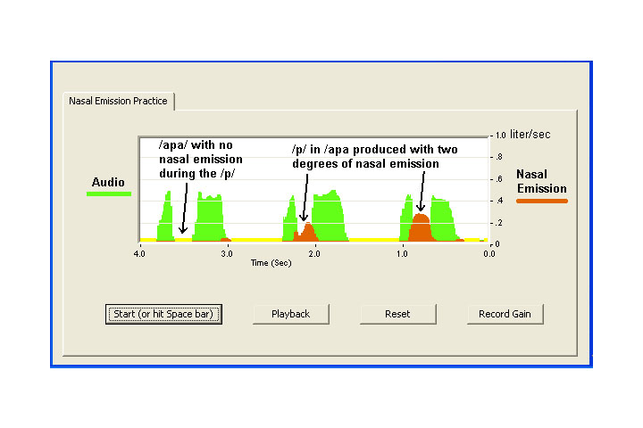

The NEM systems includes the following features:
- Compatibility with Windows XP/Vista/7/8
- Data automatically saved in standard 2-channel .wav format
- USB Connectivity
- A color-differentiated, superimposed display of both nasal emission and speech audio level (SPLSound pressure level is a logarithmic measure of the RMS sound pressure of a sound relative to a reference value, the threshold of hearing. It is measured in decibels (dB)).
- Practice and Compare-To-Model modes.
- User–settable target limits for nasal emission or audio in the Practice Mode
- Both average and total airflow values, as well as the average SPL, displayed for any selected nasal emission episode. Peak values are also easy to measure.
- Adult and child size masks are available
- Periods of nasal inhalation are clearly marked on the Nasal Emission chart and eliminated from the computations. There is no need to control the subject's breathing pattern during testing or training.
- Uses Glottal Enterprise's proven aerodynamic measurement technology that is factory calibrated.
- Has the ability to also measure nasal air leakage in standard blowing tasks.
This product is for research and teaching purposes only. It is not a medical device. It is not intended to be used in the diagnosis, cure, treatment, mitigation or prevention of disease and it is not intended to affect the structure or function of the body.
- NEM-1 (Single User) includes:
- A- NEM mask handle with electronics and USB connectivity
- B- One OroNasal mask—adult or child
- • NEM software
- NEM-1 (Multi-User) includes:
- A- NEM mask handle with electronics and USB connectivity
- B- One OroNasal mask—adult
- B- One OroNasal mask—child
- • NEM software
{kind=link}
This product is for research and teaching purposes only. It is not a medical device. It is not intended to be used in the diagnosis, cure, treatment, mitigation or prevention of disease and it is not intended to affect the structure or function of the body.

This is a picture of a Nasal Emission Practice Screen showing pronunciations of the practice bi-syllable “apa”, with three amounts of nasal emission (red areas) during the “p”consonants . The green areas are the sound levels in the vowels “a”.
This product is for research and teaching purposes only. It is not a medical device. It is not intended to be used in the diagnosis, cure, treatment, mitigation or prevention of disease and it is not intended to affect the structure or function of the body.
1. What are the relationships between the NAS system, the NEM system and the NVS system?
| There are a number of ways that our systems for visualizing nasality can be purchased. The full Nasality Visualization System (NVS) includes the capability for measuring Nasal Emission (NEM-1, formerly NE-1) and the system for measuring nasalance (NAS-1 system). As part of the NVS system, the NAS-1 system has both the mask and partition options. (Nasal Emission measurement requires the mask.) There is a price advantage when purchasing the complete NVS system over purchasing the NAS-1 and NEM-1 separately. |
2. How does the NEM system for recording nasal emission work? Is it accurate enough for research applications?
| The NEM-1 system uses the standard Glottal Enterprises dual-chamber (OroNasal) mask to isolate nasal airflow. The flow rate is measured by a transducer mounted in the mask handle, as is the acoustic signal. The software records and displays both signals simultaneously and they are superimposed on the screen in a chart display. (See the dual-chamber mask and a typical screen at http://www.glottal.com/Products/NVS.htm#NE1.) Average values of NE and SPL can be obtained for a chosen speech segment. You definitely can do research measuring nasal emission with the NEM-1. It is also useful in speech training tasks. |
3. Can the so-called SNAP test (Simplified Nasometric Assessment Procedure, as described by Ann W. Kummer in Cleft Palate and Craniofacial Anomalies, Singular Press, 2001) be used with the NAS-1 system?
| The SNAP test or its equivalent can be used on any device for displaying nasalance, including ours. |
4. Can systems for measuring nasalance be used for measuring nasal emission in pressure consonants?
| No. If a manufacturer claims that its nasalance system does measure nasal emission, it is a misstatement |
5. Can a system for measuring nasal emission in pressure consonants also measure nasal airflow in vowels?
| Yes, though perhaps not as conveniently as with a system measuring naslance. |

- 
- 
- 
- 
- 